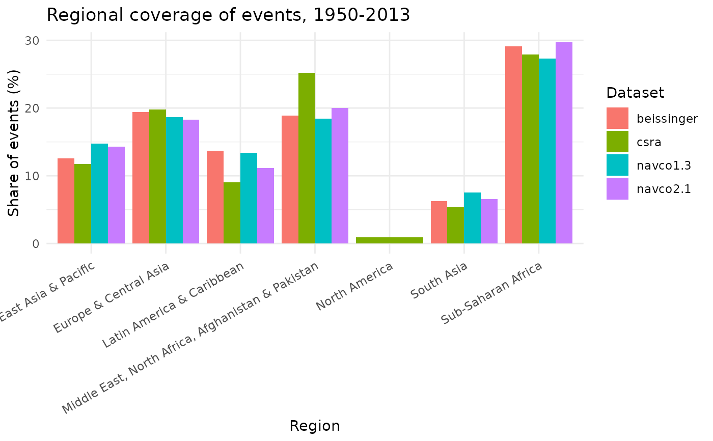

Compare regional coverage across conflict/campaign datasets
Source:R/plot_dataset_comparison.R
plot_regional_coverage.RdDraws a grouped bar chart of the regional distribution of events (World
Bank 7-region classification) for any set of conflict_data() campaign
or episode datasets, in the style of Guseinov, Ustyuzhanin, and Korotayev
(2026), Figures 1-3. Comparing several datasets this way shows whether
they cover similar parts of the world, or whether one systematically
over/under-represents a region relative to the others.
Source
Guseinov, R., Ustyuzhanin, V., & Korotayev, A. (2026). Talking about the [same] revolution? A comparative analysis of main datasets of revolutionary events. Defence and Peace Economics, 1–31. doi:10.1080/10242694.2026.2704178
Arguments
- datasets
Character vector of
conflict_data()dataset keys to compare, e.g.c("navco1.3", "beissinger", "csra").- start_year, end_year
Integer. Year range to compare (applied to every dataset).
- coding_system
"cow"or"gw".- metric
"share"(default; each dataset's bars sum to 100%, so datasets of very different size remain comparable) or"count"(raw number of events).
Examples
if (requireNamespace("ggplot2", quietly = TRUE)) {
plot_regional_coverage(
c("navco1.3", "navco2.1", "beissinger", "csra"),
start_year = 1950, end_year = 2013
)
}
